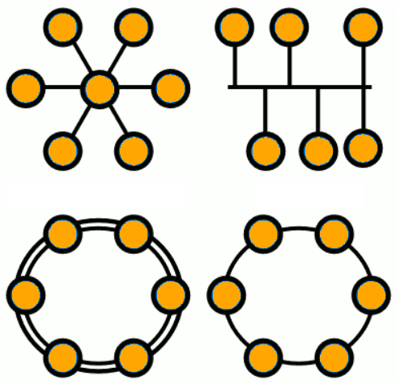
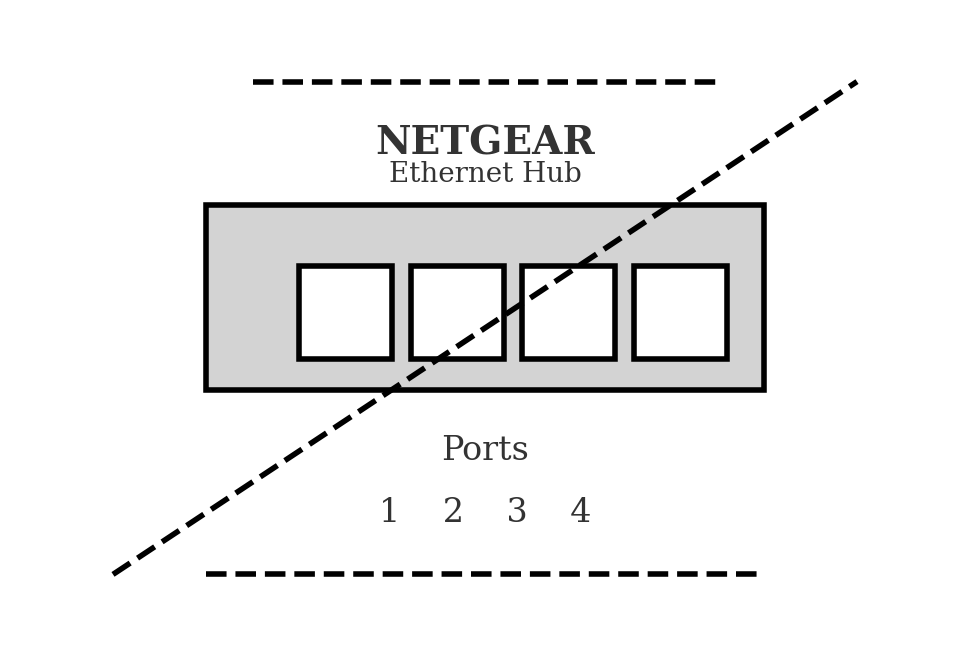

Diccionario
Topología

- Definición
-
Es la forma en que está diseñada la red, sea en el plano físico o lógico.
- Ejemplo
-
La red del aula tiene topología de estrella
Concentrador

- Definición
-
Es un dispositivo que funciona a nivel de la capa física. Repite por todos sus puertos todo lo que recibe.
- Ejemplo
-
En la configuración Token Ring, el centro de la LAN es un Hub.